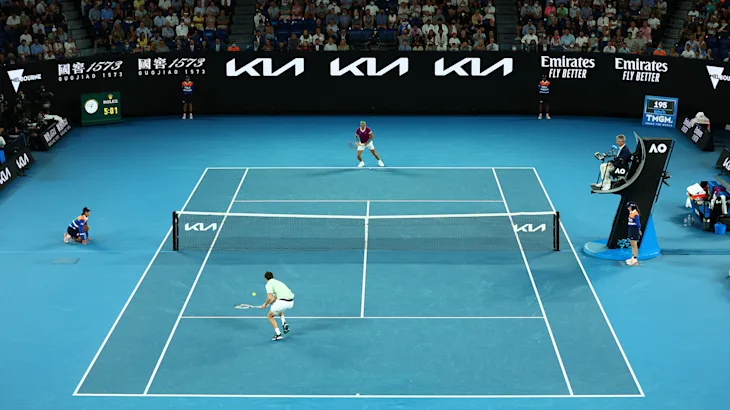

The Australian Open is the first grand slam of the tennis calendar, held annually in January in Melbourne, Australia. Known for its high-energy atmosphere, the tournament features the world's top players battling it out in singles, doubles, and mixed doubles events. The Australian Open has a rich history, with legendary champions like Rod Laver, Roy Emerson, and Serena Williams all claiming multiple titles. With its mix of tradition and innovation, the Australian Open is a must-see event for any tennis fan.
Some Information You Might Find Usefull!
Top 3 Players - MALE
Novak Djokovic - 9 titles
Djokovic is the all-time record holder for most Australian Open titles won, with a total of nine titles to his name. He won his first title in 2008 and has won the tournament in 2011-2013, 2015-2016, and 2019-2021. Djokovic's dominance at the Australian Open has been truly remarkable, and he is widely regarded as one of the greatest players to ever play on hard courts.
Roy Laver - 6 titles
Emerson won six Australian Open titles in the 1960s, which was a record until Djokovic surpassed him in the 2010s. He won his first title in 1961 and went on to win five more titles in 1963-1967. Emerson's legacy at the Australian Open remains strong, and he is considered one of the all-time greats of Australian tennis
Roger Federer - 6 titles
Federer has won six Australian Open titles in his career, tying him with Emerson and Djokovic for the most Australian Open titles won in the Open Era. He won his first title in 2004 and went on to win in 2006-2007, 2010, 2017, and 2018. Federer's grace and style on the court have made him one of the most popular players in tennis history.
General Infromation about the Turnament
- The tournament was first held in 1905 and has been played on various surfaces, including grass and Rebound Ace, before switching to the current surface of hard court in 1988.
- The Australian Open is typically held in January, which makes it the first Grand Slam tournament of the year.
- The tournament has grown in popularity over the years and is now one of the largest annual sporting events in the world, with over 800,000 spectators attending in 2020.
- The Australian Open features both men's and women's singles and doubles competitions, as well as mixed doubles and wheelchair events.
- In addition to the on-court action, the tournament also features numerous off-court activities, including live music, food and wine events, and a fan festival called the AO Live Stage.
Top 3 PLayers - FEMALE
Margaret Court - 11 titles
Court is the most successful player in the history of the Australian Open, with a remarkable 11 titles to her name. She won her first title in 1960 and went on to win in 1961-1966 and 1969-1971. Court's dominance at the Australian Open was truly unparalleled, and she is considered one of the greatest players in tennis history.
Serena Williams - 7 titles
Williams is one of the greatest female tennis players of all time, and she has won seven Australian Open titles in her career. She won her first title in 2003 and went on to win in 2005, 2007, 2009-2010, 2015, and 2017. Williams' power and athleticism on the court have made her one of the most feared opponents in tennis.

Steffi Graf - 4 titles
Graf won four Australian Open titles in her career, cementing her legacy as one of the greatest players in tennis history. She won her first title in 1988 and went on to win in 1989-1990 and 1994. Graf's all-around game and mental toughness made her one of the most formidable players on the court.
Check out these Photos of the Australien Open


